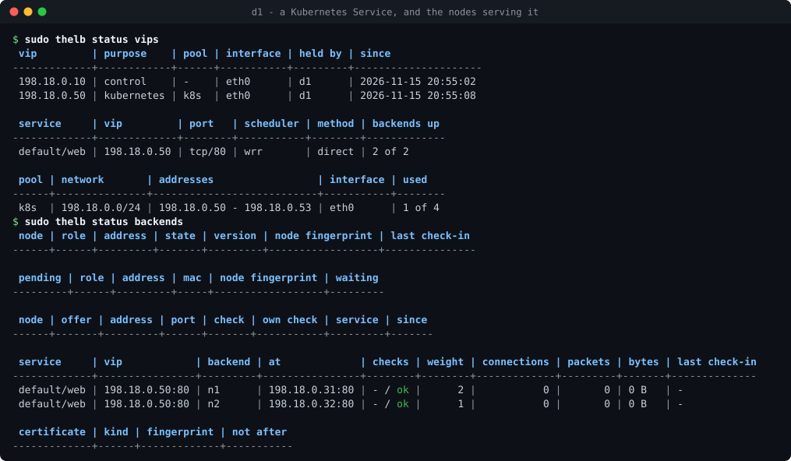

Guides
Kubernetes
theLB gives Services of type LoadBalancer their VIPs, and sends their traffic straight to the nodes that run their pods. Nothing of theLB runs on the nodes.
How it works#
A Service asks for theLB with loadBalancerClass: dmarts.app/thelb. Then:
- The leader gives the Service a VIP from a theLB pool, and writes it in the Service's status, with
ipMode: VIP.kubectl get serviceshows it as theEXTERNAL-IP. - The leader holds the VIP and sends each connection to a node that runs a ready pod of the Service, by direct routing - the packet is unchanged.
- The node's own service proxy - kube-proxy, or Cilium - already knows the VIP from the Service's status. It hands the packet to a pod on that node.
- The pod answers. The reply goes from the node straight to the client, with the VIP as its source. It never comes back through the director.
Nothing runs on the nodes: no agent, no approval. theLB reads the cluster's nodes, Services and endpoints from the Kubernetes API, and checks each node at the Service's health port. A new node gets traffic as soon as it runs a ready pod.
What you need:
- Kubernetes 1.35 or later.
- Directors on the nodes' network: direct routing sends packets to a node's MAC address. IP-in-IP is not used for Kubernetes.
- Cilium as kube-proxy replacement, or kube-proxy. kube-proxy in IPVS mode needs
strictARP: true- see With kube-proxy.
What runs where#
Every setup has the same parts:
| Where | What it is | What theLB puts there |
|---|---|---|
| A director | a machine or a node that runs thelb director | under systemd: the two secret files, the kubeconfig and the unit, in /etc/thelb and /etc/systemd/system. In a DaemonSet: nothing on the node - the pod reads the secret files from a Secret |
| The kubectl machine | any machine where kubectl reaches the cluster as its administrator - your laptop, a control-plane node | the files thelb generate prints, to apply or run |
| The nodes | the cluster's nodes, which receive the traffic | nothing: no theLB, no backend, no label. Only a node that runs a director is prepared for it |
| A client | any machine that connects to a Service's VIP | nothing |
thelb generate prints a file and writes nothing. Run it as root on any Linux machine with theLB - a director will do - and copy what it prints to where it is used.
Choose a setup#
| Setup | Directors | If a director fails | On the nodes |
|---|---|---|---|
| 1. One director outside the cluster | one machine, under systemd | the VIPs are gone until it is back | nothing |
| 2. Several directors outside the cluster | two or three machines, under systemd | another takes over in seconds | nothing |
| 3. One director on a node | one node: under systemd, or a DaemonSet | the VIPs are gone until it is back | the director's node is kept for theLB |
| 4. Several directors on nodes | two or three nodes: a DaemonSet, or systemd | another takes over in seconds | the directors' nodes are kept for theLB |
Directors outside the cluster are the simplest: the nodes stay as they are. Why a director's node is special: the node's own proxy takes every packet for a Service's VIP - on every node, before theLB's IPVS sees it. On a director's node, it must leave theLB's Services alone:
- With Cilium, the node is labelled
dmarts.app/thelb-director, and each theLB Service has the annotationservice.cilium.io/node-selector: "!dmarts.app/thelb-director". Cilium then skips those Services on the labelled nodes only.thelb generate k8s servicewrites the annotation;thelb generate k8s nodeprepares the node. - With kube-proxy, kube-proxy must not run on the director's node at all - see With kube-proxy.
On a director's node, pods cannot reach theLB's Services by their cluster IP either. So keep these nodes for theLB: a control-plane node is a good choice, because it runs no workloads already.
A director checks its node
A director that finds its own address on a node of the cluster refuses to start unless the node has the label dmarts.app/thelb-director.
Let generate read your cluster#
Without more, thelb generate k8s reads nothing: it prints files that fit any cluster, and its scripts find out what they need - with kubectl - when they run. Give it your kubeconfig, and it fits what it prints to your cluster instead:
sudo thelb generate k8s kubeconfig --from-kubeconfig ~/.kube/config > thelb.kubeconfigIt first says what it would read, with what, and asks:
thelb generate k8s kubeconfig reads the Kubernetes cluster, to fit what it prints to it - read-only, with this:
kubeconfig /home/me/.kube/config
context kubernetes-admin@kubernetes
API server https://10.0.0.21:6443
user kubernetes-admin
it reads the API server's version; the Secret thelb/thelb-director-token - its token and CA go into the kubeconfig; what that token may do, as a director would ask
Read the cluster? [y/N]It only reads - it never changes the cluster - and reads nothing before your y. --from-context <name> picks another context of the kubeconfig; --yes answers for you, in a script. Without a terminal and without --yes, it reads nothing.
| Form | What it takes from the cluster |
|---|---|
generate k8s | its version: 1.35 or later |
generate k8s kubeconfig | the kubeconfig itself, not a script - and checked: a director reaches the API server with it, and has every permission it needs |
generate k8s director | with kube-proxy, the API server's address for the pods (see With kube-proxy); which nodes it runs directors on |
generate k8s node <node> | just the steps the node needs: a control-plane node or a worker, with Cilium, with kube-proxy |
generate k8s service <name> | the selector and ports of the Deployment or StatefulSet of that name, unless --selector and --port say them; a warning when no pod matches; a refusal when a Service of that name has another load-balancer class, which Kubernetes does not let change |
What the cluster says is checked before it goes into a file or a script - a version, a token, a label - so a broken API server cannot add a line to them. A kubeconfig user that signs in with a plugin (exec), as on most managed clusters, cannot be read: leave out --from-kubeconfig, and run the scripts where kubectl works. The steps below use the scripts; each generate k8s command in them takes --from-kubeconfig too.
The examples use the control VIP 10.0.0.10:7443, the network 10.0.0.0/24, a pool from 10.0.0.50, the machines lb1 to lb3, the control-plane nodes cp1 to cp3, and a Service web on port 80. Every file below is what thelb generate k8s prints - copy it, or download it.
1. One director outside the cluster#
| Where | Files | Runs |
|---|---|---|
lb1 | /etc/thelb/director.secret and backend.secret (its first start writes them), /etc/thelb/kubeconfig, /etc/systemd/system/thelb-director.service | thelb director |
| the kubectl machine | thelb-k8s.yaml, thelb-kubeconfig.sh, web-service.yaml | kubectl |
| the nodes | nothing | - |
Step 1 - on lb1: print the directors' identity, and the script that builds their kubeconfig:
sudo thelb generate k8s > thelb-k8s.yaml
sudo thelb generate k8s kubeconfig > thelb-kubeconfig.shA namespace, a ServiceAccount, the permissions - reading, and a Service's status, never a Service itself - and a token for directors outside the cluster.
# theLB 0.1.0, as `thelb generate k8s` printed it: the directors' identity and
# permissions in the cluster. Apply it: kubectl apply -f <this file>
apiVersion: v1
kind: Namespace
metadata:
name: thelb
---
apiVersion: v1
kind: ServiceAccount
metadata:
name: thelb-director
namespace: thelb
---
apiVersion: rbac.authorization.k8s.io/v1
kind: ClusterRole
metadata:
name: thelb-director
rules:
- apiGroups: [""]
resources: ["services", "nodes"]
verbs: ["get", "list", "watch"]
- apiGroups: [""]
resources: ["services/status"]
verbs: ["update", "patch"]
- apiGroups: ["discovery.k8s.io"]
resources: ["endpointslices"]
verbs: ["get", "list", "watch"]
- apiGroups: ["events.k8s.io"]
resources: ["events"]
verbs: ["create", "patch"]
---
apiVersion: rbac.authorization.k8s.io/v1
kind: ClusterRoleBinding
metadata:
name: thelb-director
roleRef:
apiGroup: rbac.authorization.k8s.io
kind: ClusterRole
name: thelb-director
subjects:
- kind: ServiceAccount
name: thelb-director
namespace: thelb
---
apiVersion: v1
kind: Secret
metadata:
name: thelb-director-token
namespace: thelb
annotations:
kubernetes.io/service-account.name: thelb-director
type: kubernetes.io/service-account-tokenThe script: it reads the API server's address and the token, and prints the kubeconfig.
#!/bin/sh
# theLB 0.1.0, as `thelb generate k8s kubeconfig` printed it. Run it where kubectl
# reaches the cluster, after applying what `thelb generate k8s` prints: it prints
# the kubeconfig of directors outside the cluster, or under systemd on its
# nodes - with the token of the ServiceAccount thelb-director.
# sh thelb-kubeconfig.sh > thelb.kubeconfig
# Then, on each director:
# sudo install -D -m 600 thelb.kubeconfig /etc/thelb/kubeconfig
# and start it with --kubeconfig /etc/thelb/kubeconfig.
set -eu
server=$(kubectl config view --minify -o jsonpath='{.clusters[0].cluster.server}')
ca=$(kubectl -n thelb get secret thelb-director-token -o jsonpath='{.data.ca\.crt}')
token=$(kubectl -n thelb get secret thelb-director-token -o jsonpath='{.data.token}' | base64 -d)
if [ -z "$token" ]; then
echo "the Secret thelb/thelb-director-token has no token yet: apply what thelb generate k8s prints, then try again" >&2
exit 1
fi
cat <<EOF
apiVersion: v1
kind: Config
clusters:
- name: cluster
cluster:
server: $server
certificate-authority-data: $ca
users:
- name: thelb-director
user:
token: $token
contexts:
- name: thelb
context:
cluster: cluster
user: thelb-director
current-context: thelb
EOFStep 2 - on the kubectl machine: apply the identity, then build the kubeconfig. Copy thelb.kubeconfig to lb1.
kubectl apply -f thelb-k8s.yaml
sh thelb-kubeconfig.sh > thelb.kubeconfigStep 3 - on lb1: install the kubeconfig, readable by root only, and start the director under systemd with --kubeconfig:
sudo install -D -m 600 thelb.kubeconfig /etc/thelb/kubeconfig
sudo thelb generate systemd director --vip 10.0.0.10 --port 7443 --bootstrap \
--secret-file /etc/thelb/director.secret --backend-secret-file /etc/thelb/backend.secret \
--kubeconfig /etc/thelb/kubeconfig | sudo tee /etc/systemd/system/thelb-director.service
sudo systemctl daemon-reload
sudo systemctl enable --now thelb-director
sudo thelb statusthelb status shows, in the cluster table, kubernetes: 0 Services. If the director does not start, it says why - see When something is wrong.
Step 4 - on lb1: a pool for the Services' VIPs, and the Service's port open in the firewall, if one is active:
sudo thelb admin pool add k8s --vip 10.0.0.50/24 --vippool-count 10 --default
sudo ufw allow proto tcp from any to 10.0.0.50 port 80 comment 'thelb web'Open each Service's port to its VIP only: a rule for every port of the VIP would also open whatever listens on all of the director's addresses.
Step 5 - a Service: print it on lb1, apply it on the kubectl machine:
sudo thelb generate k8s service web > web-service.yaml
kubectl apply -f web-service.yaml
kubectl get service webthelb generate k8s service web: port 80, the pods labelled app: web.
# theLB 0.1.0, as `thelb generate k8s service` printed it: a Service of theLB's
# class. Apply it: kubectl apply -f <this file>
apiVersion: v1
kind: Service
metadata:
name: web
namespace: default
annotations:
# With directors on nodes of the cluster, and Cilium: Cilium leaves this
# Service to the directors there. Harmless anywhere else.
service.cilium.io/node-selector: "!dmarts.app/thelb-director"
# dmarts.app/thelb-pool: <pool> a pool other than the default
# dmarts.app/thelb-ip: <address> a particular address of the pool
# dmarts.app/thelb-shared-vip: <key> one VIP for the Services that give the same key, their ports apart
spec:
type: LoadBalancer
loadBalancerClass: dmarts.app/thelb
# Local: only the nodes with a ready pod of the Service get its traffic,
# weighted by their pods, and the pods see each client's own address.
externalTrafficPolicy: Local
selector:
app: "web"
ports:
- name: tcp-80
protocol: TCP
port: 80
targetPort: 80Step 6 - from a client: curl http://10.0.0.50/. On lb1, sudo thelb status backends shows the nodes serving it - see Services.
2. Several directors outside the cluster#
| Where | Files | Runs |
|---|---|---|
lb1, lb2, lb3 | the same on each: both secret files, copied from lb1; the kubeconfig; the unit | thelb director |
| the kubectl machine | as in setup 1 | kubectl |
| the nodes | nothing | - |
Step 1 - lb1 and the kubectl machine: setup 1, steps 1 to 3. lb1 creates the cluster, and writes the secret files.
Step 2 - on lb2 and lb3: copy /etc/thelb/director.secret, /etc/thelb/backend.secret and thelb.kubeconfig from lb1, and install them readable by root only. One kubeconfig serves every director:
sudo install -D -m 600 director.secret /etc/thelb/director.secret
sudo install -D -m 600 backend.secret /etc/thelb/backend.secret
sudo install -D -m 600 thelb.kubeconfig /etc/thelb/kubeconfig
rm director.secret backend.secret thelb.kubeconfigStep 3 - on every director: open the firewall, if one is active - the control port and connection sync between the directors, and each Service's port, because any director may lead. sudo thelb doctor prints these for the machine it runs on:
sudo ufw allow from 10.0.0.0/24 to any port 7443 proto tcp comment 'thelb control'
sudo ufw allow in on eth0 from 10.0.0.0/24 to 224.0.0.81 port 8848 proto udp comment 'thelb connection sync'
sudo ufw allow proto tcp from any to 10.0.0.50 port 80 comment 'thelb web'Step 4 - on lb2 and lb3: the same unit as lb1, --kubeconfig included:
sudo thelb generate systemd director --vip 10.0.0.10 --port 7443 --bootstrap \
--secret-file /etc/thelb/director.secret --backend-secret-file /etc/thelb/backend.secret \
--kubeconfig /etc/thelb/kubeconfig | sudo tee /etc/systemd/system/thelb-director.service
sudo systemctl daemon-reload
sudo systemctl enable --now thelb-directorEvery director needs --kubeconfig: a leader without it serves no Kubernetes Service.
Step 5 - on lb1: approve them:
sudo thelb status pending
sudo thelb admin approve lb2 lb3Step 6 - a pool and a Service: setup 1, steps 4 to 6, once, on any director.
Three directors are best - see How many directors?.
3. One director on a node#
The director runs on cp1, a control-plane node: under systemd, with files on the node like a director outside, or as a DaemonSet, with nothing on the node but the pod. Either way, prepare the node first.
thelb generate k8s node cp1 prints the script that prepares it. It keeps a worker for theLB (tainted and drained); with kube-proxy, keeps kube-proxy off it; labels it; and with Cilium, touches theLB's Services, so that Cilium on the node takes the label. It finds out by itself which of these the cluster needs.
thelb generate k8s node cp1. Its last lines say how to give the node back.
#!/bin/sh
# theLB 0.1.0, as `thelb generate k8s node cp1` printed it. Run it where kubectl
# reaches the cluster, before a director runs on the node cp1 - in the
# DaemonSet, or under systemd: it makes cp1 a director's node.
# sh thelb-node.sh
# A node that only receives traffic needs none of this: no label, and nothing
# of theLB - the directors read it from the API, and check it themselves.
set -eu
node=cp1
selector='!dmarts.app/thelb-director'
kubectl get node "$node" >/dev/null
# 1. A worker is kept for theLB: tainted, so that nothing else is scheduled
# there, and drained of the pods it runs - a pod on a director's node cannot
# reach theLB's Services. A control-plane node runs no workloads already.
if kubectl get nodes -l node-role.kubernetes.io/control-plane -o name | grep -qx "node/$node"; then
echo "$node is a control-plane node: not tainted, not drained"
else
kubectl taint node "$node" dmarts.app/thelb-director=true:NoSchedule --overwrite
kubectl drain "$node" --ignore-daemonsets --delete-emptydir-data
kubectl uncordon "$node"
fi
# 2. With kube-proxy: kube-proxy cannot leave some Services to theLB, so it
# must not run on the node. Its DaemonSet is kept off the labelled nodes -
# patch it again after a kubeadm upgrade - and the node is rebooted, to
# clear the rules kube-proxy left. A director in a pod there reaches the API
# server only at the server's own address: see the guide.
kubeproxy=no
if kubectl -n kube-system get daemonset kube-proxy >/dev/null 2>&1; then
kubeproxy=yes
kubectl -n kube-system patch daemonset kube-proxy --type=strategic -p \
'{"spec":{"template":{"spec":{"affinity":{"nodeAffinity":{"requiredDuringSchedulingIgnoredDuringExecution":{"nodeSelectorTerms":[{"matchExpressions":[{"key":"dmarts.app/thelb-director","operator":"DoesNotExist"}]}]}}}}}}}'
fi
# 3. The label: the DaemonSet runs a director on the nodes that have it, a
# director refuses to start on a node of the cluster without it, and theLB
# sends no Service's traffic to the node.
kubectl label node "$node" dmarts.app/thelb-director=true --overwrite
# 4. With Cilium: Cilium reads a node's labels only when a Service changes, so
# every theLB Service is touched - then Cilium on the node leaves them to
# theLB. Each needs the annotation service.cilium.io/node-selector:
# "!dmarts.app/thelb-director", as thelb generate k8s service writes it.
if kubectl get ciliumnodes.cilium.io "$node" >/dev/null 2>&1; then
kubectl get services -A -o jsonpath='{range .items[?(@.spec.loadBalancerClass=="dmarts.app/thelb")]}{.metadata.namespace}{" "}{.metadata.name}{" "}{.metadata.annotations.service\.cilium\.io/node-selector}{"\n"}{end}' |
while read -r ns name sel; do
if [ "$sel" != "$selector" ]; then
echo "warning: the Service $ns/$name lacks the annotation service.cilium.io/node-selector: \"$selector\" - Cilium on $node takes its packets before theLB" >&2
fi
kubectl -n "$ns" annotate service "$name" --overwrite dmarts.app/thelb-touched="$(date +%s)"
done
fi
if [ "$kubeproxy" = yes ]; then
echo "$node is a director's node once rebooted - kube-proxy left its rules there. Then start its director, and approve it on a director: sudo thelb status pending"
else
echo "$node is a director's node. Start its director, and approve it on a director: sudo thelb status pending"
fi
# To give the node back:
# kubectl label node cp1 dmarts.app/thelb-director-
# kubectl taint node cp1 dmarts.app/thelb-director- (a worker)
# then touch theLB's Services, as step 4 does, and remove its director from the
# cluster - sudo thelb admin remove, with the name sudo thelb status directors
# shows - so that the node gets traffic again.3a. Under systemd#
| Where | Files | Runs |
|---|---|---|
cp1 | as lb1 in setup 1: the secret files, the kubeconfig, the unit | thelb director |
| the kubectl machine | as in setup 1, and thelb-node.sh | kubectl |
| the other nodes | nothing | - |
Step 1 - on cp1: print the identity, the kubeconfig script and the node's script:
sudo thelb generate k8s > thelb-k8s.yaml
sudo thelb generate k8s kubeconfig > thelb-kubeconfig.sh
sudo thelb generate k8s node cp1 > thelb-node.shStep 2 - on the kubectl machine: apply the identity, build the kubeconfig, prepare the node. Copy thelb.kubeconfig to cp1.
kubectl apply -f thelb-k8s.yaml
sh thelb-kubeconfig.sh > thelb.kubeconfig
sh thelb-node.shStep 3 - on cp1: setup 1, steps 3 to 6: the kubeconfig, the unit, a pool, the Service's port in the node's firewall if it has one, and a Service.
3b. As a DaemonSet#
| Where | What | Runs |
|---|---|---|
cp1 | the label dmarts.app/thelb-director; nothing on its disk | the director's pod, on the node's network |
| the cluster | the namespace thelb: the identity, the Secret thelb-secrets with the two secret files, the DaemonSet thelb-director | - |
| the kubectl machine | director.secret, backend.secret, thelb-director.yaml, thelb-node.sh, web-service.yaml | kubectl |
Step 1 - the secret files. A pod cannot write them, so make them first, readable by you only, and keep them: a director or backend outside the cluster needs them too.
umask 077
sudo thelb generate secret > director.secret
sudo thelb generate secret > backend.secretStep 2 - print the DaemonSet, with --bootstrap, and the node's script:
sudo thelb generate k8s director --vip 10.0.0.10 --port 7443 --bootstrap --bootstrap-wait 31s \
--secret-file /etc/thelb/director.secret --backend-secret-file /etc/thelb/backend.secret \
--kubeconfig in-cluster --metrics 127.0.0.1:9180 > thelb-director.yaml
sudo thelb generate k8s node cp1 > thelb-node.shThe identity of step 1, and the DaemonSet. generate checks the flags the way the director would.
# theLB 0.1.0, as `thelb generate k8s` printed it: the directors' identity and
# permissions in the cluster. Apply it: kubectl apply -f <this file>
apiVersion: v1
kind: Namespace
metadata:
name: thelb
---
apiVersion: v1
kind: ServiceAccount
metadata:
name: thelb-director
namespace: thelb
---
apiVersion: rbac.authorization.k8s.io/v1
kind: ClusterRole
metadata:
name: thelb-director
rules:
- apiGroups: [""]
resources: ["services", "nodes"]
verbs: ["get", "list", "watch"]
- apiGroups: [""]
resources: ["services/status"]
verbs: ["update", "patch"]
- apiGroups: ["discovery.k8s.io"]
resources: ["endpointslices"]
verbs: ["get", "list", "watch"]
- apiGroups: ["events.k8s.io"]
resources: ["events"]
verbs: ["create", "patch"]
---
apiVersion: rbac.authorization.k8s.io/v1
kind: ClusterRoleBinding
metadata:
name: thelb-director
roleRef:
apiGroup: rbac.authorization.k8s.io
kind: ClusterRole
name: thelb-director
subjects:
- kind: ServiceAccount
name: thelb-director
namespace: thelb
---
apiVersion: v1
kind: Secret
metadata:
name: thelb-director-token
namespace: thelb
annotations:
kubernetes.io/service-account.name: thelb-director
type: kubernetes.io/service-account-token
---
# The directors, on the nodes labelled for them. thelb generate k8s node <node>
# prints the script that makes a node one: its label, and the rest.
# Its secret files come from the Secret thelb-secrets - the cluster's two
# secret files, copied from a director:
# kubectl -n thelb create secret generic thelb-secrets \
# --from-file=director.secret=<the directors' secret file> \
# --from-file=backend.secret=<the backends' secret file>
apiVersion: apps/v1
kind: DaemonSet
metadata:
name: thelb-director
namespace: thelb
labels:
app.kubernetes.io/name: thelb-director
spec:
selector:
matchLabels:
app.kubernetes.io/name: thelb-director
minReadySeconds: 10
updateStrategy:
type: RollingUpdate
rollingUpdate:
maxUnavailable: 1
template:
metadata:
labels:
app.kubernetes.io/name: thelb-director
spec:
serviceAccountName: thelb-director
hostNetwork: true
nodeSelector:
dmarts.app/thelb-director: "true"
tolerations:
- key: node-role.kubernetes.io/control-plane
operator: Exists
effect: NoSchedule
- key: dmarts.app/thelb-director
operator: Exists
effect: NoSchedule
terminationGracePeriodSeconds: 30
containers:
- name: director
image: ghcr.io/dmartsapp/thelb:0.1.0
args:
- director
- "--vip"
- "10.0.0.10"
- "--port"
- "7443"
- "--bootstrap"
- "--bootstrap-wait"
- "31s"
- "--secret-file"
- "/etc/thelb/director.secret"
- "--backend-secret-file"
- "/etc/thelb/backend.secret"
- "--kubeconfig"
- "in-cluster"
- "--metrics"
- "127.0.0.1:9180"
securityContext:
# theLB writes /proc/sys/net, which a container runtime mounts
# read-only otherwise, and may load the kernel's modules.
privileged: true
readinessProbe:
httpGet:
host: "127.0.0.1"
port: 9180
path: /readyz
periodSeconds: 2
volumeMounts:
# Each secret file mounted as itself (subPath): a Secret's files are
# symbolic links otherwise, which theLB refuses to read.
- name: secrets
mountPath: "/etc/thelb/director.secret"
subPath: "director.secret"
readOnly: true
- name: secrets
mountPath: "/etc/thelb/backend.secret"
subPath: "backend.secret"
readOnly: true
- name: machine-id
mountPath: /etc/machine-id
readOnly: true
- name: modules
mountPath: /lib/modules
readOnly: true
- name: run
mountPath: /run/thelb
volumes:
- name: secrets
secret:
secretName: thelb-secrets
defaultMode: 0400
# The node's machine ID, for its node fingerprint: a restarted pod
# rejoins without approval.
- name: machine-id
hostPath:
path: /etc/machine-id
type: File
- name: modules
hostPath:
path: /lib/modules
type: Directory
# thelb status and thelb admin work on the node, as on any director.
- name: run
hostPath:
path: /run/thelb
type: DirectoryOrCreateStep 3 - on the kubectl machine: apply the manifests, make the Secret, prepare the node - its label starts the pod:
kubectl apply -f thelb-director.yaml
kubectl -n thelb create secret generic thelb-secrets \
--from-file=director.secret=./director.secret \
--from-file=backend.secret=./backend.secret
sh thelb-node.sh
kubectl -n thelb rollout status daemonset thelb-directorThe pod looks for the cluster for 31 seconds, creates it, and turns ready.
Step 4 - a pool, from the kubectl machine, through the pod - the image has thelb. (Or sudo thelb on the node itself, if theLB is installed there: the pod shares the node's /run/thelb.)
kubectl -n thelb exec daemonset/thelb-director -- thelb admin pool add k8s --vip 10.0.0.50/24 --vippool-count 10 --default
kubectl -n thelb exec daemonset/thelb-director -- thelb statusStep 5 - a Service: setup 1, step 5, and curl http://10.0.0.50/ from a client.
What the pod needs, and why:
hostNetwork: the VIPs, IPVS and the control port are the node's.privileged: theLB writes kernel settings in/proc/sys/net, which is read-only in a container otherwise.- The secret files, each mounted as itself (
subPath): theLB reads a secret file only if it is a regular file, and a Secret's files are symbolic links otherwise. - The node's
/etc/machine-id: it is part of the node fingerprint, so a restarted pod rejoins without approval. - The node's
/run/thelb:sudo thelb statusworks on the node, as on any director. - A readiness probe on
/readyz, served with--metrics: a pod is ready once it votes and has caught up with the leader. A rolling update then replaces the next director only after that. --kubeconfig in-cluster: the pod uses its own ServiceAccount; no kubeconfig file.--bootstrap-wait 31s: Kubernetes restarts a crashed pod after 10 seconds - sooner than the other of two directors stands alone - so a pod that may create the cluster looks for it longer first.generaterefuses--bootstrapwithout it.
With one director, a rolling update of the DaemonSet stops it: the VIPs are gone until the new pod is ready.
4. Several directors on nodes#
The directors run on cp1, cp2 and cp3. As a DaemonSet, follow setup 3b, but bring the first director up alone - the steps below. Under systemd, follow setup 2 on the nodes, with thelb generate k8s node and its script for each node before its director starts.
| Where | What | Runs |
|---|---|---|
cp1, cp2, cp3 | the label; nothing on their disks | a director's pod each |
| the cluster | as in setup 3b | - |
| the kubectl machine | as in setup 3b, with a node script for each node | kubectl |
Step 1 - setup 3b, steps 1 and 2, with a script for each node:
sudo thelb generate k8s node cp1 > thelb-node-cp1.sh
sudo thelb generate k8s node cp2 > thelb-node-cp2.sh
sudo thelb generate k8s node cp3 > thelb-node-cp3.shStep 2 - on the kubectl machine: the first director alone. It creates the cluster:
kubectl apply -f thelb-director.yaml
kubectl -n thelb create secret generic thelb-secrets \
--from-file=director.secret=./director.secret \
--from-file=backend.secret=./backend.secret
sh thelb-node-cp1.sh
kubectl -n thelb rollout status daemonset thelb-directorStep 3 - the others. Their pods find the cluster, and wait for approval. Approve them through cp1's pod:
sh thelb-node-cp2.sh
sh thelb-node-cp3.sh
pod=$(kubectl -n thelb get pods -l app.kubernetes.io/name=thelb-director --field-selector spec.nodeName=cp1 -o name)
kubectl -n thelb exec "$pod" -- thelb status pending
kubectl -n thelb exec "$pod" -- thelb admin approve cp2 cp3
kubectl -n thelb rollout status daemonset thelb-directorStep 4 - a pool and a Service: setup 3b, steps 4 and 5. If the nodes run a firewall, open it as in setup 2, step 3: the directors talk to each other on the control port, and sync connections by multicast.
Why the first director comes up alone
Pods with --bootstrap that start at the same moment can each create a cluster: in 0.1, theLB does not yet merge two clusters that share a secret. After every director has stopped at once - the whole cluster down - check that each pod shows the same cluster ID (thelb status cluster). Delete a pod that shows another: it starts again, and joins the cluster that holds the control VIP.
Services#
thelb generate k8s service takes:
| Flag | What it sets |
|---|---|
--namespace <ns> | the Service's namespace (default default) |
--port <port>[/tcp|udp|sctp][:<pods' port>] | a port, more than once for more; 80:8080 sends port 80 to the pods' 8080 (default 80) |
--selector <key=value> | the pods it sends to (default app=<name>) |
--policy Local|Cluster | its externalTrafficPolicy (default Local) |
--pool <pool> | the annotation dmarts.app/thelb-pool |
--ip <address> | the annotation dmarts.app/thelb-ip |
--shared-vip <key> | the annotation dmarts.app/thelb-shared-vip |
A Service takes its VIP from the default pool, unless it names another. Then:
kubectl get service web # EXTERNAL-IP: 10.0.0.50
sudo thelb status vips # on a director: the VIP, held by the leader
curl http://10.0.0.50/ # from a clientthelb status services and thelb status backends list each port of the Service on its VIP, and the nodes serving it, with their weights and checks:

As text
$ sudo thelb status vips
vip | purpose | pool | interface | held by | since
-------------+------------+------+-----------+---------+---------------------
198.18.0.10 | control | - | eth0 | d1 | 2026-11-15 20:55:02
198.18.0.50 | kubernetes | k8s | eth0 | d1 | 2026-11-15 20:55:08
service | vip | port | scheduler | method | backends up
-------------+-------------+--------+-----------+--------+-------------
default/web | 198.18.0.50 | tcp/80 | wrr | direct | 2 of 2
pool | network | addresses | interface | used
------+---------------+---------------------------+-----------+--------
k8s | 198.18.0.0/24 | 198.18.0.50 - 198.18.0.53 | eth0 | 1 of 4
$ sudo thelb status backends
node | role | address | state | version | node fingerprint | last check-in
------+------+---------+-------+---------+------------------+---------------
pending | role | address | mac | node fingerprint | waiting
---------+------+---------+-----+------------------+---------
node | offer | address | port | check | own check | service | since
------+-------+---------+------+-------+-----------+---------+-------
service | vip | backend | at | checks | weight | connections | packets | bytes | last check-in
-------------+----------------+---------+----------------+--------+--------+-------------+---------+-------+---------------
default/web | 198.18.0.50:80 | n1 | 198.18.0.31:80 | - / ok | 2 | 0 | 0 | 0 B | -
default/web | 198.18.0.50:80 | n2 | 198.18.0.32:80 | - / ok | 1 | 0 | 0 | 0 B | -
certificate | kind | fingerprint | not after
-------------+------+-------------+-----------Which nodes get traffic#
| Policy | The nodes that get traffic | Their weight | The client's address |
|---|---|---|---|
Local (recommended) | those whose health port - the Service's healthCheckNodePort - answers 200: they run a ready pod of the Service | the node's number of ready pods | reaches the pod |
Cluster | every ready node; checked at the port's node port, for TCP | 1 | lost: the node passes traffic to a pod on any node, through source NAT |
Never a node that is not Ready, a director's node, or a node labelled node.kubernetes.io/exclude-from-external-load-balancers - the label Kubernetes defines for this:
kubectl label node worker1 node.kubernetes.io/exclude-from-external-load-balancers=truekubeadm puts that label on control-plane nodes. If pods run on a control-plane node - its taint taken off - they get no traffic from outside until the label is off too:
kubectl label node cp1 node.kubernetes.io/exclude-from-external-load-balancers-When a node left out runs ready pods of a Local Service, the leader says so - in its log, and as a NodesExcluded warning on the Service, which kubectl describe service shows - with the node, its pods, why, and what to do.
With Local, draining a node is enough: once it has no ready pod, its health port says 503, and it gets no new connections. The leader logs each node that starts or stops serving:

As text
$ journalctl -u thelb-director -o cat
2026-11-15T20:55:08.578Z [director] OK Kubernetes Service given its VIPs service=default/web vips=198.18.0.50
2026-11-15T20:55:08.579Z [director] OK node serving service=default/web vip=198.18.0.50 port=tcp/80 node=n1 at=198.18.0.31:80 weight=2
2026-11-15T20:55:08.580Z [director] OK node serving service=default/web vip=198.18.0.50 port=tcp/80 node=n2 at=198.18.0.32:80 weight=1
2026-11-15T20:55:16.736Z [director] WARN node not serving: weight 0 service=default/web vip=198.18.0.50 port=tcp/80 node=n2 at=198.18.0.32:80 reason="its health port answers no 200: no ready pod of the Service there"
2026-11-15T20:55:20.742Z [director] OK node serving service=default/web vip=198.18.0.50 port=tcp/80 node=n2 at=198.18.0.32:80 weight=1Annotations#
| Annotation | What it does |
|---|---|
dmarts.app/thelb-pool: <pool> | takes the VIP from that pool, not the default. A dual-stack Service names one pool for each family, separated by commas. |
dmarts.app/thelb-ip: <address> | asks for that address of the pool. One for each family, separated by commas. |
dmarts.app/thelb-shared-vip: <key> | Services with the same key share one VIP, as long as their ports are different. |
service.cilium.io/node-selector: "!dmarts.app/thelb-director" | with Cilium and directors on nodes: Cilium leaves the Service to those nodes. |
A dual-stack Service (spec.ipFamilies) gets one VIP for each family, from that family's pool.
A Service keeps its VIP#
A Service keeps its VIP for as long as it is theLB's. Its status keeps naming it even while no director runs - as with any load balancer that is down - so that DNS records and clients do not lose it. When the Service stops being theLB's (its type changed, say), the leader takes the VIP back and clears its status. A deleted Service gives its VIP back.
The status is also the cluster's memory. theLB keeps its allocations in the directors' memory, so after every director has stopped, the new cluster knows none: each Service then takes again the address its status names - once its pool is back, and if nothing else answers for the address - and a new Service passes over the addresses other Services' statuses name. Create the pools again first, with your saved commands.
Changing the director nodes#
To make a node a director's node, run its script - thelb generate k8s node <node> - then approve its director. The script touches theLB's Services after the label, because Cilium reads a node's labels only when a Service changes; approve the director after it, so that it never leads while Cilium still takes its packets.
sudo thelb generate k8s node worker2 > thelb-node-worker2.sh
sh thelb-node-worker2.sh
sudo thelb admin approve worker2 # on a directorTo give it back: take off the label - the DaemonSet stops its director - and, on a worker, the taint; touch the Services; and remove the director from the cluster, so that the node gets traffic again:
kubectl label node worker2 dmarts.app/thelb-director-
kubectl taint node worker2 dmarts.app/thelb-director-
kubectl get services -A -o jsonpath='{range .items[?(@.spec.loadBalancerClass=="dmarts.app/thelb")]}{.metadata.namespace}{" "}{.metadata.name}{"\n"}{end}' |
while read -r ns name; do
kubectl -n "$ns" annotate service "$name" --overwrite dmarts.app/thelb-touched="$(date +%s)"
done
sudo thelb admin remove worker2 # on a directorWith kube-proxy#
kube-proxy has no way to skip a Service on some nodes only. So:
In IPVS mode, kube-proxy puts every load-balancer IP on an interface of every node. Set strictARP, so that the nodes do not answer ARP for the VIPs:
kubectl -n kube-system get configmap kube-proxy -o yaml \
| sed -e 's/strictARP: false/strictARP: true/' \
| kubectl apply -f -
kubectl -n kube-system rollout restart daemonset kube-proxyA director on a node needs kube-proxy kept off that node, and the node rebooted to clear the rules kube-proxy left. The node's script does the first - this patch - and says when to reboot. kubeadm upgrade rewrites kube-proxy's DaemonSet: patch it again after an upgrade.
kubectl -n kube-system patch daemonset kube-proxy --type=strategic -p \
'{"spec":{"template":{"spec":{"affinity":{"nodeAffinity":{"requiredDuringSchedulingIgnoredDuringExecution":{"nodeSelectorTerms":[{"matchExpressions":[{"key":"dmarts.app/thelb-director","operator":"DoesNotExist"}]}]}}}}}}}'Pods on a node without kube-proxy reach no Service at all - one more reason to keep these nodes for theLB. That includes the API server's own Service, which a director in a pod finds with --kubeconfig in-cluster: give the DaemonSet's container the API server's real address instead, which its certificate names:
env:
- name: KUBERNETES_SERVICE_HOST
value: "10.0.0.21" # the API server's own address
- name: KUBERNETES_SERVICE_PORT
value: "6443"Or run the directors on these nodes under systemd, with a kubeconfig.
When something is wrong#
- The director does not start. It says why: the API server does not answer, it runs a Kubernetes release older than 1.35, the credential lacks a permission (each one is named - apply
thelb generate k8sagain), or its node is not labelled (run the node's script). - A Service has no
EXTERNAL-IP.kubectl describe service <name>shows theLB's events:AllocationFailedsays why - no default pool, an address in no pool or taken, a port another Service on a shared VIP has. - A warning
NoDirectorExclusion. Directors run on labelled nodes, and the Service lacks the Cilium annotation. - Nodes get no traffic.
sudo thelb status backendsshows each node's check and weight. WithLocal, a node without a ready pod has weight 0 - by design. - A node with pods is not in
thelb status backendsat all. theLB leaves it out -kubectl describe service <name>shows aNodesExcludedwarning that says why. Most often, kubeadm's label on a control-plane node: see Which nodes get traffic. - A client's connection to the VIP hangs, and
thelb status backendscounts 0 packets. A firewall on the leader drops the Service's port before IPVS sees it. Allow it to the VIP, on every director:sudo ufw allow proto tcp from any to 10.0.0.50 port 80. thelb statusshows, in the cluster table, how the director's watch of Kubernetes goes: the number of theLB Services, or what is wrong.
The design behind all this - the choices and their reasons - is in docs/design.md.